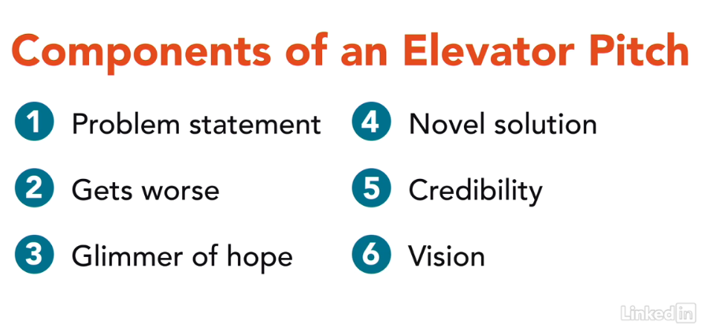

Feedback Is Ongoing
Spring Break is never long enough, is it? I planned to get much more work done. I wrote two proposals and a 45-minute presentation, but I didn’t get feedback on all of the work you have turned in.
I need a grace period myself this week. I hope to add feedback to all the Technical Descriptions and Instructions that have been submitted by the weekend. So watch for a notification when your work is ready.
Find Help in the Pitch Tip Sheet
As you work on your presentation video, be sure to refer to the advice in the Tip Sheet: Pitch.
The Tip Sheet outlines all the points you need to include in your presentation. If you follow the advice you find there, you are bound to earn a Complete for your Pitch on the first try.
How to Start Your Pitch
We’ve all seen presentations that start out dull and never get any better. You can avoid that dilemma by following Dominic Colenso’s (@dominiccolenso) advice in this YouTube video (2m 32s).
Begin your presentation with an attention-getting statement (or a bang, as Colenso says) such as one of these options:
- a fact
- a figure
- a quote
- a story
Of course, you need to choose an attention-getter that is going to hook your audience. Don’t choose any fact, figure, quotation, or story. Share something that surprise or startles your listeners. Draw them in, and keep them listening.
Watch the short video to learn more and then apply it to your own presentation.
Constructing Your Slides
Tech evangelist Guy Kawasaki shares his vision of the perfect pitch in just ten slides. The Only 10 Slides You Need in Your Pitch applesauce.
Six Parts of Your Pitch
The LinkedIn Learning video linked from the Pitch Assignment outlines these six things to cover in an elevator pitch. Use these components to structure the body of your presentation.
